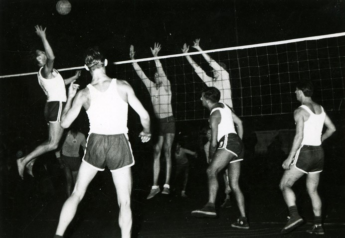
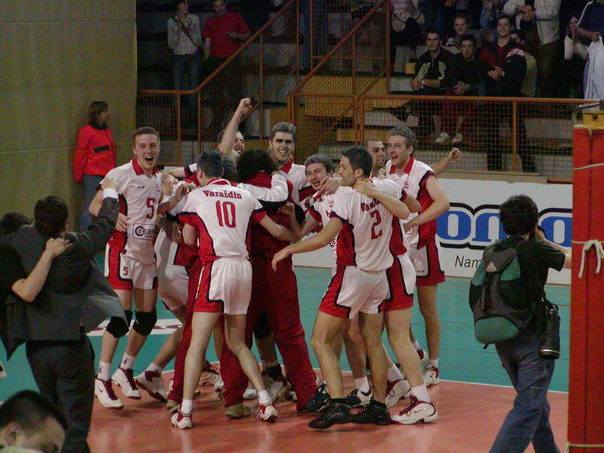

Odbojka
KRONOLOGIJA
1928.
od školske godine 1928./29. igraju se odbojkaške utakmice između varaždinske Gimnazije i Učiteljske škole u Čakovcu
1929.
odbojka se prvi puta igra u sklopu Sokolskog društva, a odbojkaši sve do 2. svjetskog rata sudjeluju u brojnim natjecanjima van Varaždina
1929.
varaždinski sokolaši osvajaju prvo mjesto na turniru u Središču ob Dravi
1946.
odbojkaši Tekstilca prvaci prvenstva okruga te igraju na finalnom saveznom turniru u Sarajevu
1952.
OK Tekstilac osniva ženski odbojkaški klub
1954.
muška reprezentacija Varaždina osvaja 1. mjesto na Turniru gradova Hrvatske
1956.
muška reprezentacija Varaždina osvaja 1. mjesto na Turniru gradova Hrvatske
1957.
odbojkaški klub Tekstilac mijenja ime u OK Varaždin; unutar RSD Sloboda formirana ženska ekipa


Noćna utakmica OK Tekstilac, Varaždin, 1950-e, GMV 1272/2005
1959.
muška reprezentacija Varaždina osvaja 1. mjesto na Turniru gradova Hrvatske
1994.
Odbojkaški klub Varaždin nastupa u Kupu kupova Europe
1997.
u Varaždinu održan odbojkaški turnir Kupa CEV-a na kojem nastupa i OK Varaždin
2004.
Odbojkaški klub Varaždin osvaja naslov prvaka Hrvatske (sezona 2003./04.)

Detalj utakmice finala između OK Varaždin i OK Mladost Zagreb, Zagreb, 2004., privatno vlasništvo
2005.
Prvenstvo Hrvatske u kajaku i kanu slalomu u Varaždinu